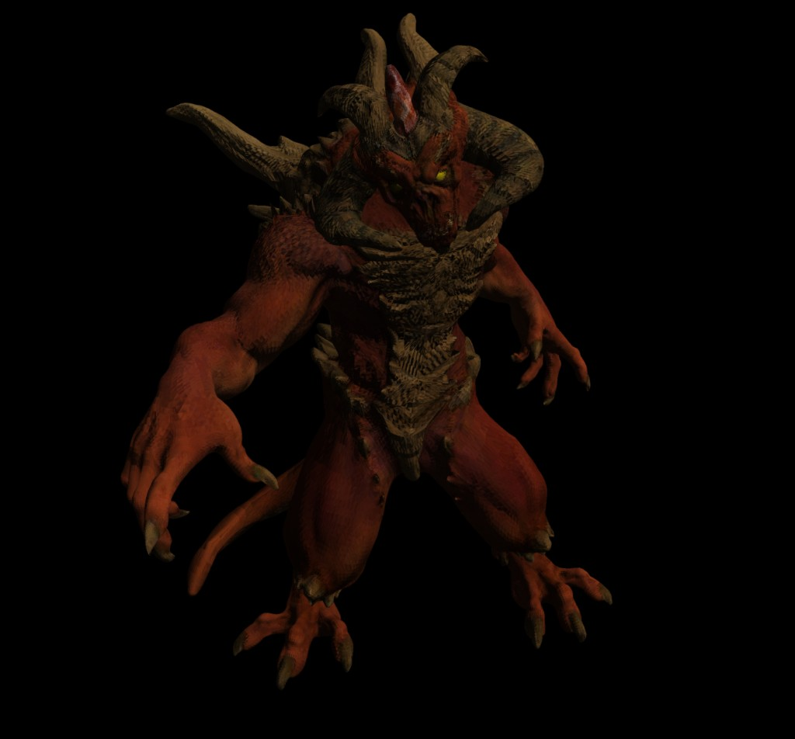

Overview
项目概述
这个实现不是为了做一个“能出图的玩具”，而是把现代渲染管线拆开后逐段落地。 源码里把 Camera、MVP 变换、光栅化、透视正确插值、片元着色、ZBuffer 与纹理采样连成完整数据流， 目标是建立对真实引擎渲染路径的可解释认知。
Featured Project / Rendering Engineering
不使用任何图形 API，从模型读取、坐标变换、光栅化、透视正确插值、深度测试到纹理采样， 搭建一个可解释的 CPU 渲染器。


Overview
这个实现不是为了做一个“能出图的玩具”，而是把现代渲染管线拆开后逐段落地。 源码里把 Camera、MVP 变换、光栅化、透视正确插值、片元着色、ZBuffer 与纹理采样连成完整数据流， 目标是建立对真实引擎渲染路径的可解释认知。
Pipeline
lookat / perspective / viewport 完成世界空间到屏幕空间的矩阵设置。render_model() 遍历三角面，细分后进入着色阶段。rasterize() 负责重心坐标覆盖测试、透视重建、深度比较与写回。CurvedBlinnPhongShader::fragment() 合成法线贴图、漫反射、高光与纹理颜色。Mapping
shader.vertex() 输出 clip 坐标。rasterize() 处理覆盖判定与像素遍历。fragment(bar) 重建属性并计算颜色。framebuffer.set() 完成颜色写入。Extensions
invert_transpose() 处理视空间法线矩阵，保持变换正确性。Code
lookat(settings.eye, settings.view_dir, settings.up);
perspective(norm(settings.eye));
viewport(settings.width / 16, settings.height / 16,
settings.width * 7 / 8, settings.height * 7 / 8);
TGAImage framebuffer(settings.width, settings.height, TGAImage::RGB);
init_ZBuffer(settings.width, settings.height);